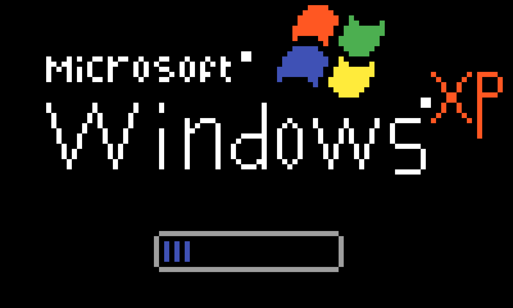

TMS Business Technology Department

When Wangen Ruled the Keyboard Lab
Before Wangen became the digital headquarters of high finance at TMS, she did extensive research on Mountain Dew, computers and business, and thereon after taught the students of TMS how to do the same.
Hmp! That's all folks! It's just me! The Wangenator a.k.a the grapest teacher of all time!
The Course
TMS Business Technology was the place where students learned the sacred arts of typing, saving files correctly, reading directions, and not making the teacher ask why the printer was doing that.
- Computer basics with old-school authority
- Business documents, tables, and classroom projects
- Keyboard confidence for future corporate legends
The Wangen Effect
Her old schedule page lists computer intro, computer usage, and career pathways classes, which makes this page an honorary archive of the Wangen Business Technology age.
Students entered as ordinary citizens and left knowing at least one more thing about computers than they did yesterday. Sometimes.
SAVE OFTEN
BUT MAKE IT WINDOWS 98
Business Technology Pro Tips
- Praise S.O.S. (Savic Operating Systems) before touching the keyboard.
- Accept she's better than you.
- Remember she's all knowing.
- Never question her authority.
